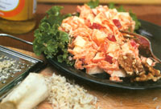
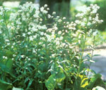
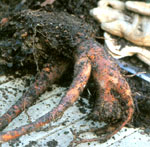

The peppery fire of horseradish (Armoracia rusticana) is no slow burn. It'll flash up your nose and curl your tongue into submission in one swift sear. As a condiment for red meat and shellfish, grated horseradish is legendary, but the plant's medicinal and ornamental qualities are noteworthy, too.
Roots are the business end of horseradish plants, traditionally they are grated and served as a fresh relish or added as a seasoning to meat and seafood sauces. Horseradish also enhances the flavors of salads and soups, particularly those that feature seasonal fall vegetables and fruits.
A native of southeastern Europe, horseradish was well known to the Egyptians by 1500 B.C., and has been used to represent bitter herbs on the Seder plate for the Jewish Passover since Biblical times. It was used primarily as a medicine by early Europeans; for centuries, the root was rubbed on sore joints to relieve rheumatism, and pressed upon foreheads to relieve headaches-a practice that actually may have helped alleviate sinus-type pain.
It's a natural decongestant-if you breathe in enough allyl isothiocyanate, a chemical in the root. That quality may account for one of the plant's folk names, "stingnose." If you dare to try this for yourself, hold a spoonful of grated or "prepared" horseradish about 4 inches from your nose, take a deep sniff (be careful!), and then put a small pinch on your tongue. You should be breathing easier within seconds of the sniff.
Scientists also have found that compounds in horseradish root can kill a range of bacteria, which makes it an even more appropriate accompaniment to a roast beef sandwich in this era of increased concerns about food pathogens. Although horseradish's strong taste precludes its use in toothpaste, the volatile oils in the root also have been found to block the growth of the bacteria that cause dental plaque.
Sometime before the Renaissance, the peppery root became popular as a savory meat relish in Germany. Word of its tastiness spread from there into the Scandinavian countries and Britain, where it quickly became the preferred condiment for beef and oysters.
Brought to North America in colonial days, the hardy European horseradish took root commercially by the mid-1800s in the potash-rich bottomlands of the Mississippi River near Collinsville, Illinois, which is close to St. Louis. Today, more than half of the world's horseradish is grown in that area. The other major commercial growing area is near Chicago.
A similar-tasting plant, wasabi (Wasabi japonica), also called Japanese horseradish, is a much more recent arrival in North America. Used as a condiment with traditional Japanese dishes, wasabi is native to Asia and has a slightly more complex and sweet taste than the European plant. If you are cooking Asian foods and cannot find true wasabi, though, you can use the European horseradish with good results. (We're working on a wasabi report for an upcoming issue.-MOTHER)
Plants of the standard, European horseradish are so easy to grow and so interesting to look at that, if you're a horseradish lover, there's no reason not to have some in your yard-even if you don't have a garden. The plant has ornamental green, strap-shaped leaves and small white flowers that grow on long stems like the blooms of mustard, to which horseradish is related. Purple-leafed and variegated (leaves splashed with white) cultivars also have been developed as ornamentals, but they are rare.
A tough perennial hardy to Zone 3, European horseradish can persist for many years. Because it requires a period of winter dormancy, though, it is not well-suited for tropical and semi-tropical climates. Set out dormant roots in early spring, planting them 3 inches deep and 12 inches apart; the thick, nubby end is the section most eager to sprout. Fertile soil in full sun is the best location, but horseradish usually manages to adapt to less-than-ideal growing sites.
The plants die back in late fall, which is the best time to dig them. Allow the roots to dry for a few days before storing them in the refrigerator. (Washed and placed in polyethylene bags, they will keep for several months at 32 to 38 degrees). Leave at least one parent plant behind to dig, divide and replant the following spring. Also, don't worry if you decide not to dig your horseradish every year. It will keep coming back, although the roots become woody with age (those from 1- to 2-year-old plants usually have the best taste). As a garden plant, horseradish is indestructible; keep your patch from spreading out of bounds by using excess roots for relishes and sauces.
Horseradish roots do not give off their spicy punch until they are grated or ground. As the tissues come into contact with air, a chemical reaction takes place that creates the volatile compounds. Adding vinegar stops this process: If you want mild horseradish, add vinegar immediately after you grind the root; for the spiciest horseradish, wait a few minutes before adding the vinegar.
If you grate a large quantity of horseradish root, do it outdoors or turn on a small fan. Otherwise, your eyes are likely to wa ter and bum, the same way they would if you were chopping pungent onions. For home preparation, using a blender to do the grating is practical and less "tearful." Also, use glassware for storing and serving horseradish; it turns silver dishes black.
Prepared horseradish is grated raw root mixed with an equal amount of vinegar (any vinegar works, but rice wine vinegar brings out the clean zing of fresh horseradish well). The mix will keep in the refrigerator for several months but as it ages, it loses flavor and darkens, which is your clue to make a fresh batch. Beet-based salads often include horseradish, but crunchy slaw types, such as the fresh carrot and apple salad featured on Page 102, benefit from a dollop, too.
Related Articles:
Work up a 'sweat'
Mother Earth News
|
 The broad straplike, grass- green leaves of horseradish grow in massive clumps that can reach 3 feet in width and height. The plant's attractive appearance contrasts strikingly with it unpromising- looking, but tasty and medicinal root. |
 |
 |